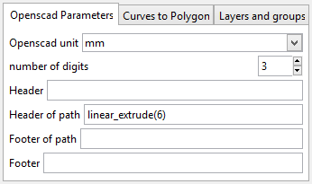
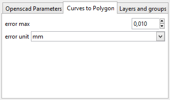
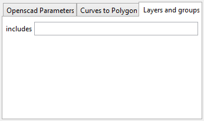
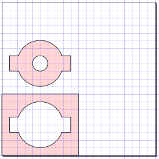
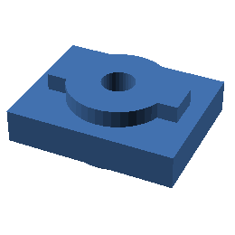

gdesign/inkscape provides tools to make Openscad 3D objects from Inkscape paths.
|  | Openscad unit : convert Inkscape coordinates to mm, cm or inches number of digits : round for float coordinates header : header of file.scad header of path : header of each path (polygon) footer of path : footer of each path footer : footer of file.scad |
|  | error max : maximum distance when converting Bezier curves and arcs to polylines error unit in mm, cm, in, pt or px |
|  | includes field defines which groups and layer will be in the scad file if field is empty then all gropus and layers are included if field is layer then just layer is included if field is layer1 + layer2 then layer1 and layer2 are included if field is all then every layers and groups are included if field is all - layer1 then every layers and groups but layer1 are included names and operands must be separated by commas inkscape:label is used in layers instead of id |
|  |  | ex03.svg | ex03.scad |
{kind=link}
{kind=link}
{kind=link}